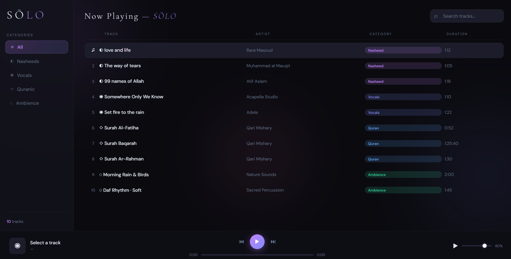

A focused audio experience built for halal listening.
SOLO is a dark-themed audio player designed around intentional listening. Instead of mainstream music platforms, the application focuses on vocals-only tracks, nasheeds, Quranic recitations, nature ambience, and other peaceful audio experiences.

Full application mockup
SOLO is a dark themed audio player built using HTML, CSS, and JavaScript. The idea behind the project was to create a focused listening experience centered around halal audio content — nasheeds, vocals-only tracks, Quran recitations, and nature ambience.
Instead of building a traditional music player, the goal was to create something calmer, cleaner, and distraction free.
Structure and layout of the application interface.
Dark visual system, clean layout, and styling.
Audio playback, track switching, and control interactions.
Interface planning focused on minimal, distraction-free design.
Full play, pause, next, and previous track navigation built entirely in JavaScript for smooth and responsive control.
Users can adjust the volume directly from the interface without leaving the player — keeping the experience seamless.
Content is organized into categories — nasheeds, Quran recitations, vocals-only, and nature ambience — so users can find what they need quickly.
The entire UI is built around a dark theme to reduce eye strain and create a calm, focused listening environment.
The project started with planning the interface structure and audio flow. The UI was kept minimal to maintain focus on the listening experience.
JavaScript handled audio playback, track switching, and control interactions. CSS was used to build the dark visual system and responsive layout from the ground up.
One of the main challenges was balancing simplicity with functionality. The interface needed to stay visually clean while still including all the essential playback features users expect from an audio player — without one compromising the other.
Improved understanding of UI structuring and how layout decisions affect usability.
Learned how to organize project structure more effectively and turn ideas into functional frontend applications.
Learned how to build interactive frontend applications using vanilla JavaScript.